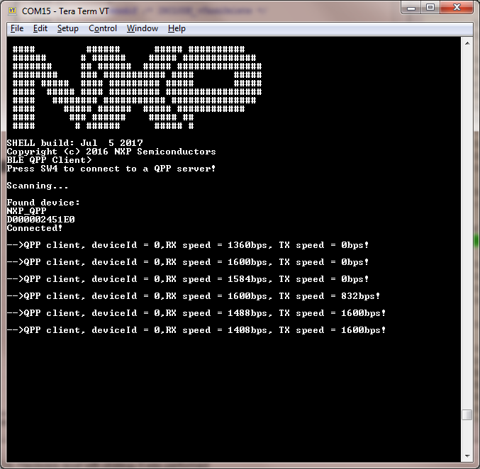

The application is built to work only with the Private Profile Server application presented in the previous subchapter.
- Open a serial port terminal and connect it to board, in the same manner described in section 5.1.3. The start screen is displayed after the board is reset.
- Press the SCANSW button on the Private Profile Client board to start scanning for devices. Press the ADVSW button on the Private Profile Server board to make it enter discoverable mode. The client connects to the server after it sees it advertise the Private Profile Service. The client then configures notifications and monitors data received through notifications.
- If the user wants to also send data from the client to the server, after pressing SENDSW, the client starts writing the Rx characteristic every 100 milliseconds.
Figure 1. Private Profile Client – Output Console
